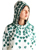
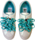
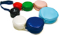

A Company Fairy Tale
Commissioned for a solo exhibition at the Finnish-Norwegian Cultural Institute in Oslo, Norway, June 2008
There is a city way up north called Helsinki that is not too big and not too small. Helsinki is the capital of Finland, and it is also the home of Aamu and Johan. Together they work as a Company to make all sorts of wonderful things: shoes, chairs, stools, jackets, pants, sweaters, beds, and gloves. But of course they can not do it all by themselves.
Pinguwear
One day Aamu and Johan discovered that their friend is the daughter of a queen! This queen and her husband own a factory where they make undergarments out of wool and silk. Their best-seller is called “sex killers.” It is super-strength, ultra-flexible underwear (with lace linings, of course), which may not sound so appealing, but grandmas everywhere need such things.
Aamu and Johan thought this queen, whose name is Ritva Piiroinen, might be able to help them make their wonderful things, so they wrote her a nice letter. She replied, “I am curious to meet you,” so Aamu and Johan hopped on a train to a town north of Helsinki called Tampere. The queen met them at the station in a big shiny car. She had tall gray hair and was wearing a fur coat, fancy shoes, and earrings. On the way to her factory the queen asked, “Why are you young people interested in what we do?” Aamu replied, “We are looking for factories with good spirits.” The queen was still curious.
When they arrived, the factory was huge! The queen took Aamu and Johan to the basement, where she keeps a giant spider. The spider is a machine that weaves the wool and silk into tubes of all shapes and sizes that become the legs, sleeves, and bodies of the clothes. At birthing time there is a very strong light that shines out of the spider’s stomach and through the fabric tubes, so that the queen and the factory workers can be sure that the spider does not make any mistakes.
Aamu and Johan decided that this was a factory with a good spirit, so they asked the queen if she could help them make wonderful things. The queen was delighted, and agreed to help them make Pinguwear, which is an outfit that makes you look like a penguin!
The queen stayed at her factory, and Aamu and Johan rode the train back to Helsinki. Now whenever the queen sends them new Pinguwear she packs it like little animals, nicely folded rather than stacked, with black ribbons to pull each little penguin out of the box. It is like a very special care package from Mom, except it is actually from a queen.
Dance Shoes
After the lovely meeting with the queen, Aamu and Johan decided to visit some old friends who they knew could help them make more wonderful things. Eero Lahtinen and his family live on a farm in a town called Jämsä. Eero’s father started a felt business a very long time ago, and then Eero took over, but now Eero is seventy years old so his daughter and son are running the business. Eero’s children have kids of their own, but they are still too young to make felt. The family has a factory as big as the queen’s, because felt-making takes lots of room. To make shoes or pants or jackets out of felt, they must start out like clothes for a giant, but when they shrink from wool to felt they become human-size. Eero has great big felt-maker hands, although these days he lets his daughter and son run the business, but he is still the master.
Jämsä is in the middle of nowhere, so Aamu and Johan took a car rather than a train to visit Eero and his family. When they arrived they were greeted by two dogs, who were both helpful in different ways. Tipsu, the white dog, was a very calm host, and led Aamu and Johan right from the car to the meeting room. Rasmus, the brown dog, was quite loud and ran to all the houses around the factory barking “Someone’s here!”
Aamu and Johan met Eero, his daughter Riitta, and his son Jukka. Aamu showed them felt products she had brought back from all over the world as a spy. Eero showed them the most precious object of the family business: his father’s very first shoe, which Aamu and Johan got to touch. After show-and-tell, Aamu and Johan asked Eero and his family if they would help them make Dance Shoes out of felt, and they loved the idea!
Soon both dogs started barking, which is the alarm that Riitta’s daughter is almost home from kindergarten, so it was time to stop working for the day. But everyone in the factory began work very early in the morning, so it was okay.

Birch Me Sweater
After meeting their dear friends, Aamu and Johan heard about an old woman (who is less than forty) named Taina, who makes sweaters. Taina lives in a small village called Koijärvi, which means Moth Lake. They couldn’t reach Koijärvi by train or car, so they took a bus instead. Koijärvi is so tiny that when Aamu and Johan stepped off the bus, the villagers asked “Are you moving here?” But they said “Not at the moment,” and walked to Taina’s house.
Taina lives with her baby son, her husband, and two giant dogs. She’s a mother by day, and has a loom in the attic where she runs her sweater business at night. Her husband is a carpenter, and even invented a wooden roulette wheel so that Taina can weave many colors at once.
When Aamu and Johan arrived, Taina had to lock the dogs out, but they still scratched at the door for the entire visit. At first Aamu and Johan were worried that Taina would be too busy with her baby son (who is smaller than the dogs) to mind the details of sweater patterns, but in fact she has a sharp eye. If Aamu and Johan worried about one millimeter, then Taina worried about the half-millimeter.
Of course Taina’s sweater company has a great spirit, so now she makes many different sweaters for Aamu and Johan. Sometimes the sweaters arrive with a few dog hairs, but that is okay because Taina’s work is so beautiful. At first her deliveries were always very professionally wrapped, but now Aamu and Johan open the box to find the sweaters carefully folded inside supermarket bags, which is like something Mom would send, but a different style than packages from the queen.
Made in Korea
Having discovered so many interesting characters to help them make wonderful things in Finland, Aamu and Johan decided to travel to Korea to try making things there. Of course they couldn’t take a train or a car or a bus, so they flew in an airplane from Helsinki to Seoul, which is the capital of Korea. After their plane landed, they had dinner with an old friend. As they were showing him pictures of their clothes and shoes and sweaters from Finland, their friend got very excited. He hopped up from the table to call another friend in the middle of the night, but it was very important for Aamu and Johan to meet this other friend.
The late-night phone call was to Mr. Chun, who runs a clothing company called Ssamzie. Ssamzie means “little pocket” in Korean, and the name was chosen by Mr. Chun’s business partner, Gamsanim, who is also his wife. Gamsanim is not her real name, but that’s what everyone calls her because “Gamsanim” means “boss” in Korean, and the first part of her name, “Gamsa,” also means “thank you.” Mr. Chun is the official boss of Ssamzie, but Gamsanim is the behind-the-scenes boss. Mr. Chun and Gamsanim are very special people indeed. They run Ssamzie, but also collaborate with musicians and artists, and they ride around Seoul in a white limousine with stunning flowers painted all over.
Aamu and Johan met Mr. Chun and Gamsanim after the friend’s phone call, and it didn’t take long to see that they had found good spirits in Korea. Aamu asked, “Can we visit your factories?” So Mr. Chun and Gamsanim arranged a tour. The factories were on the outskirts of Seoul, and the workers were very happy there because they had fresh air and could make salads from the gardens and farms next door. Everyone was proud to be working with Mr. Chun and Gamsanim, even down to the Ssamzie label maker.
With Ssamzie’s excellent spirit, Aamu and Johan wanted to make wonderful things with Mr. Chun and Gamsanim. Mr. Chun said, “We should call the things we make ‘Made in Korea’ because that is what they are.” It was a brilliant idea.

Noodle Shoes
Naturally, Aamu and Johan wanted to make things as special as Korean food, because eating is an important part of Korean culture. Even the Korean expression for “How are you?” translates to “Have you eaten?” Aamu and Johan ate a lot of noodles in Korea, so they decided to make slip-on Noodle Shoes.
It was very important that the shoes be slip-on, because in Korea, Aamu and Johan never wore shoes indoors. Even the business men folded down the backs of their fancy dress shoes, because they came on and off so much.
The noodles, however, were not so easy to make. At first they were round like spaghetti, but were too fat to lace into the shoe. So Aamu and Johan visited a city south of Seoul called Busan to meet the Ssamzie shoe masters, and learn sneaker construction from scratch. One of the shoe masters, Mrs. Yang, was most helpful, and even took the shoe home to work on it. She came back the next day with a flat noodle instead of round, woven into a beautiful flower on top of the shoe. The shoe was super, but it took Mrs. Yang eight hours to make, which is far too long to spend on one shoe. They decided to try a smaller serving of noodles, and Aamu and Johan stayed with the shoe masters in Busan for one whole week before it was perfect. Every day the shoe masters treated Aamu and Johan to lunch, insisting “You are our guests!” When they finally brought the Noodle Shoes back to Seoul to show Mr. Chun and Gamsanim, they liked it so much they were hungry!
Car Shoes
From the wonderful experience with the Noodle Shoes, Aamu and Johan had another shoe idea. In addition to delicious food, Korea also makes cars, but in Seoul the cars are right next to you as you walk down the street. “Honk! Beep!” In order to make walking with cars a little nicer, Aamu and Johan decided to make shoes that look like cars, with headlights and license plates and even drivers. At first Mr. Chun and Gamsanim said, “Can we just print a car picture on the side of a shoe?” But Aamu and Johan said, “No, we want to build our own car.” So they returned to the shoe masters in Busan to find the right blend of car and shoe. You might think the shoe masters would be frustrated with such new ideas, but after many years of shoemaking, they were excited to show off their skills. The shoe masters discovered how to attach four tires to each shoe, and now when you walk with Car Shoes, your feet are in a never-ending race!

Banchan Bag
After the shoemaking, Aamu and Johan were hungry again. By the way, have you ever eaten Korean food? If not, then you should, because the chef makes endless amounts of side dishes. The dishes come in little metal bowls, each with different ingredients. Aamu and Johan had the idea of making a bag that is like all the amazing Korean side dishes. Just how the little metal bowls divide the flavors of each meal, a lot of little pouches could divide the messy contents of one big bag into separate compartments. At first Aamu and Johan made the bag silver with food pictures printed on the side, but when they tried it on, it looked like they were wearing their lunch! So they made the pouches different colors instead of just silver, and of course Mr. Chun and Gamsanim loved it.
Aamu and Johan flew home to Helsinki, and Mr. Chun and Gamsanim are producing their “Made in Korea” products with Ssamzie. Ritva Piiroinen, the queen, is still sewing Pinguwear (along with her always-popular “sex killers”), Eero and his family are still making shoes and other amazing things out of felt, and Taina is still weaving sweaters whenever she is not tending to the dogs and the baby. Aamu and Johan are so happy to be home, but all their wonderful things need a home too! So they are planning to open a shop in Helsinki, which is not too big and not too small, where they can share their wonderful things, and of course, live happily ever after.
The End